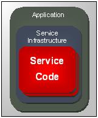
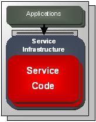
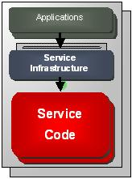
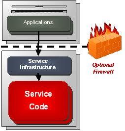
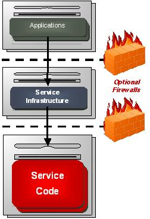
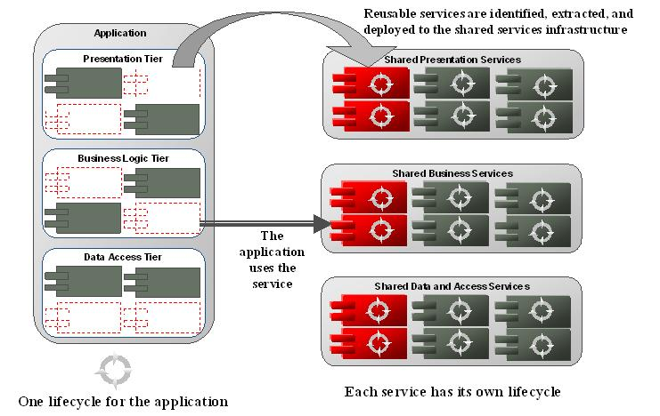
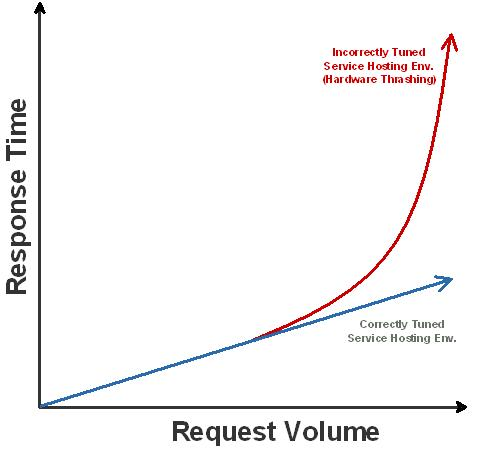

OUM |
Technique Overview |
||
Method Navigation |
Current Page Navigation |
||
|
|
||||||||
The purpose of this technique is to provide guidance on how to package and deploy SOA services.
SOA demands a new strategy when it comes to deploying components of the SOA in order to support reuse of shared assets. Traditionally, applications have been deployed and managed autonomously in their own technical silos. The traditional approach is depicted below:

Often services are built as part of an application delivery effort by “exposing” implementation parts of an application as a service. As a consequence the service code is bundled up and packaged with the application and deployed to the same processes on the same servers. This strategy poses a couple major problems:
With SOA, applications are still deployed in a similar manner, where they have their own lifecycle. However, they are no longer autonomous. SOA applications rely on shared services that are not packaged with the application(s) they were created to serve. Services therefore, have separate lifecycles. Independent service lifecycles is a fundamental component of successful SOA and it must be provided for by the Service Deployment strategy.
The only time a service may be packaged with its consuming application is when it fails the service justification process, and is left as the responsibility of the project delivery team. In this case the service is considered to be an “Application” scoped service. If the service becomes justified during a later project, it must be moved, or decoupled from the hosting application to be realized as a shared service and take on a scope higher than “Application”.
This technique provides guidelines on how to determine the most appropriate deployment strategies for the Enterprise SOA situation, how to determine a Service Migration Strategy that may be used to migrate existing code into reusable code, and finally how to perform Deployment Planning to ensure the Services can deliver according to the service contract.
No. |
Step | Component | Component Description |
|---|---|---|---|
1 |
Determine Deployment Strategies. | Deployment Strategies | The Deployment Strategies contains the various strategies that may be used for deployment of different types of services. |
2 |
Determine Service Migration Strategy. | Service Migration Strategy | The Service Migration Strategy describes the possible migration paths that may be used when services are identified where the needed code is already available within an existing application, and therefore should be made reusable. |
3 |
Perform Deployment Planning. | Service Deployment Plan. | The Service Deployment Plan contains details around the service’s operational footprint, and is needed to ensure that consumers do not violate their usage agreement and by that steeling system resources applied to other consumers. |
A successful SOA introduce a variety of deployment strategies that should be applied to different types of services. The deployment strategies for service engineering should provide the set of acceptable service deployment strategies and outline the criteria for when each strategy should be applied.
There are several factors that emanate from the service engineering process that come into play when determining the optimal deployment strategy for a particular service. Influencing factors that affect service deployment include:
Each of the factors defined above provides a single angle of influence with respect to deployment strategy. These influencing factors should be considered as a whole in order to determine the optimal deployment configuration for a particular service. Further, deployments are typically a game of trade-offs. Certain benefits gained by any particular deployment strategy results in something lost. For instance, a highly-distributed deployment is very flexible and highly available, but comes at the price of lower performance, and higher maintenance. Therefore, you should always weight the pro’s and con’s for each strategy. A successful SOA introduce a variety of deployment strategies that should be applied to different types of service based on the above criteria. These strategies are described in more detail in the following. The deployment strategy for service engineering should provide the set of acceptable service deployment strategies, and outline the criteria for when each strategy should be applied.
In larger SOA deployments it may be justifiable to have multiple service hosting environments tailored through deployment to meet the various combinations of influencing factors.
Service Scope
A service’s scope (defined against the expected consumers for a service) plays a significant role in determining service deployment. In general wider scoped (for example, enterprise or multi-enterprise services) consumer bases favor a more distributed deployment structure. Services with a wider scope should be managed autonomously. Changes to wider scoped services and other SOA participants at the same level, need to have a minimal effect on one another because of the large number of dependencies, or their strategic importance.
QoS Requirements
For the most part QOS influences are pretty obvious. Reliability, availability, scalability, and performance all have direct correlations to deployment strategy. A balance is also required with QOS requirements, as an improvement in one value, usually comes at the degradation of another. For instance, availability usually comes at the cost of some performance because of the overhead involved. Reliability can also be negatively impacted by availability and scalability.
Security
Security requirements have a direct impact on deployment strategy. In a properly secured environment, security is configured through hardware and software infrastructure, and is not left in the hands of the developers. Increasing security requirements also come at a cost of performance and possibly even reliability (propagation/synchronization issues, etc).
Service Enablement Requirements
Service Enablement is much more than simply provided a mechanism to expose a service to its consumers through a standard based mechanism (e.g.: web services stack). Service Enablement can also be used to enhance SOA flexibility and support a small portion of the overall service’s implementation logic. Service Enablement is achieved through service infrastructure, which may be configured to expose services, and ease the difficulty of implementing services. Different enablement requirements may require different infrastructure, which directly impacts deployment strategy. It is a good practice for an enterprise to standardize on a particular set of service infrastructure components that meet their common service enablement needs.
There are a common set of service deployment options that all have various benefits and drawbacks. Each deployment option is applicable for certain services but not for others. The options covered in the following do not cover detailed hardware and software options.
The minimal deployment option provides the lowest cost, minimum deployment option for deploying SOA participants but is not recommended for production level SOA deployments. This option is depicted below:

Features:
Advantages:
Recommended Usage:
Disadvantages:
The basic deployment option provides a low cost, but simple deployment option for deploying SOA participants. Similar to the minimal deployment option, this deployment option is not recommended for production level SOA. This option is depicted below:

Features:
Advantages:
Recommended Usage:
Disadvantages:
The distributed option provides a medium cost, but simple deployment option for deploying SOA participants. This option represents the recommended minimum deployment for production level SOA. This option is depicted below:

Features:
Advantages:
Recommended Usage:
Disadvantages:
The optimal deployment option provides a higher cost, but highly flexible deployment option for deploying enterprise class SOA participants. This option represents the recommended deployment for production level enterprise class SOA. This option is depicted below:

Features:
Advantages:
Recommended Usage:
Disadvantages:
When services are identified with the needed code already available within an existing application, typically projects tempt to leave the code in place within the application just providing an interface to access this “service”. New consumers interact with this type of service over an application interface while the service itself remains bundled and co-deployed with the application. There are a number of fundamental problems that arise from this however. Some of these problems include:
At the root of these problems is the fact that the application and services do not have independent lifecycles. At a very minimum, services and applications must have independent lifecycles. The figure below illustrates the correct method, and involves service migration:

At a minimum, if a service is to be promoted from an application to get shared outside of the scope of the application, it must be migrated to the shared service environment. Migration is typically not simply moving the software components from the application and redeploying them in the appropriate shared service environment. More often that not, additional engineering is required to meet the demands made of the service by its wider consumer base.
It may not always be practical to host the entire shared service implementation independently i.e. not packaged with an application. This is especially true with service enabling legacy applications. However, if services stay in application scope, the application itself becomes a deliverable within the SOA, and therefore can no longer be maintained on its own. Instead, application management must be covered by SOA portfolio management to ensure that any planned changes to the application are validated in SOA scope prior to commencing. As a consequence, the application might need to postpone changes due to dependency management within the SOA portfolio. This minimal level of governance must be established to prevent instability within the larger SOA environment.
Any service that exists within an application should be considered to stay in the “Declined” status. If a service were justified, then it would not be allowed to be delivered and deployed with the application that it serves. This distinction is important because it also applies to services that have been bundled with applications prior to initiating a SOA portfolio management.
If a service is identified from an existing application and justified for reuse, it needs to go through the normal service engineering processes including release planning and service delivery. This ensures that a formal contract is established for the service, and the migrated service is designed, implemented, tested, and deployed appropriately for the wider base of consumers that it will be asked to serve.
Before a service can be deployed, its operational characteristics must be identified. This information is harvested through the Service Testing procedures (refer to the Service Testing technique for more details). Operational characteristics provide the details around the service’s operational footprint and included the following:
The operational characteristics are retrieved by conducting a series of isolation tests. In addition to this information the following information should be collected from each of the expected consumers of the service and managed as part of a usage agreement between consumer and service:
The combined information may be used to ensure the following:

To ensure the service can be operated fulfilling all usage agreements of the consumers, the service consumptions agreed upon, and the resource usage of the service must be balanced on operations. With shared services being hosted on a shared system environment, care must be taken to ensure consumers do not violate their usage agreement, and by that steeling system resources applied to other consumers as well.
To ensure compliance of all consumers with the deployment planning a policy must be applied to the individual service that defines the usage terms to the consumer. In this way, also the the resource estimation will be more reliable. The usage policy will define the rules and conditions to be implemented on the infrastructure, e.g. a service bus, to allow or deny the usage of the service.
When there is time to deploy a service to the service infrastructure, a decision must be made about what belongs in a single deployment unit. Putting all the shared services in a single deployment unit is inappropriate since a change to one service will require a redeployment of all services in the same deployment unit. Similarly, deploying shared services as part of a larger application will lead to lifecycle issues since the services must have a lifecycle independent from the application lifecycle.
The smallest deployment unit would be a single service with all its required pieces. It may also make sense to create a deployment unit that contains several closely related services, for example, services that all use the same underlying database schema or access a common backend system. Whether a single service or a collection of services, the deployment unit must remain autonomous and isolated from applications and other services. This allows the service or collection of services to be administered and versioned independently. This independence is a key enabler of agility.
A deployment unit has its own lifecycle. In the best case scenario, each service will have its own deployment unit. This is not always practical however, and in some cases it may be acceptable for a group of related services to be deployed in the same deployment unit. Some of the guidelines for this exception include:
Service packages combine one or more services into one deployment unit. A package can be deployed to several systems, e.g., different staging environments like test and production. All services lifecycles combined into the same delivery package should be synchronized for deployment steps. Review the SOA Service Lifecycle technique for a set of recommended data elements that should be captured with service packages.
The Usage Policy is a special policy type defined by a system to protect resource consumption on a per consumer level. The policy will be used to control the maximum expected consumption of the service by the consumer.
Name: Name of the policy
Type: Policies can be of several types and should support a type called Usage Policy to be selected.
Owner: Policies of the type Usage Policy should be owned by the system defining the policy to protect resources.
Target: Usage policies are targeted to the services to document the level of control that needs to be implemented in the infrastructure on service enablement.
Policy: Document the policy to be applied. For Usage policies there are two options: An active usage policy enforces a policy check prior to executing the service operation, i.e. the operation will only be executed if the usage policy is not violated. A passive usage policy ensures notification on usage violations but will not prevent the service from executing the requests.
Service Enablement is considered a component of the service’s implementation. The difference between enablement and the rest of the service’s implementation is that service enablement is accomplished through infrastructure; versus deployment based artifacts originating from code (think development tools here). Further, the purpose of service enablement is to provide service level QoS for a service that do not typically stem from business requirements. This means that service enablement plays a major role in service deployment. With that point in mind, service enablement provides the following:
SOA based standards should be identified around service enablement, and documented with the Service Architecture guidelines. With respect to Service Deployment, each of the defined enablement qualities will more than likely have an impact on service deployment. Therefore, the procedures for service enablement need to be worked out based on the adopted service enablement guidelines identified by the Service Architecture.
There are no templates available to assist with this technique.
This technique is recommended for use in the following OUM tasks:
| Task | Usage |
|---|---|
| Use this technique to consider a service to be a smaller sized application that can be packaged and deployed as independent unit, which is very important for decoupling the service lifecycle from the lifecycle of applications. | |
| Use this technique for guidance during the creation of deployment packages, and the documentation of the deployment configuration. | |
| Use this technique for guidance while applying the deployment configuration for the test environment. | |
| Use this technique for guidance while applying the deployment configuration for the production environment. | |
| Use this technique to determine the approach for unit testing. | |
| Use this technique for guidance on service deployment, and enabling on the service bus. | |
| Use this technique for guidance on monitoring service usage and SLA, and monitoring reports. |
Use the following criteria to check the quality of this technique:
Are all services that are promoted from an application to get shared outside of the scope of the application, at least migrated to a shared service environment?
Are all services managed through a SOA portfolio management? Does this include service enabling of legacy applications, is the application management also covered by SOA portfolio management to ensure that any planned changes to the application are validated in SOA scope?
Has every service that is identified from an existing application and justified for reuse, gone through the normal service engineering processes? Does this include release planning and service delivery to ensure that a formal contract is established for the service, and the migrated service is designed, implemented, tested, and deployed appropriately for the wider base of consumers that it will be asked to serve?
Has a policy, that defines the usage terms to the consumer, been applied to each individual service?

Copyright © 2006, 2016, Oracle and/or its affiliates. All rights reserved.